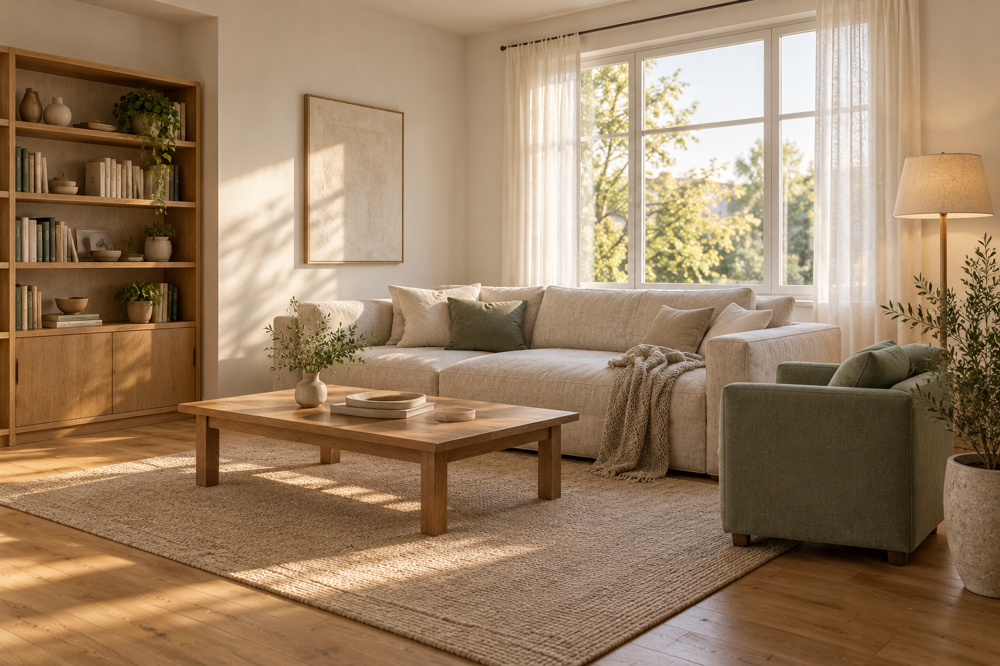
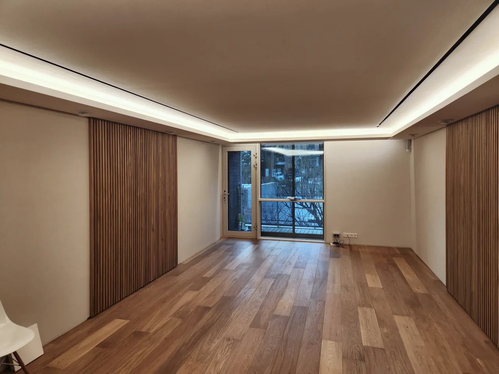

어떻게 머무는지부터, 함께 생각합니다
보기 좋은 공간에서,
생활에 맞는 공간으로.
울리는 소리, 손이 닿는 마감, 공기의 길과
다가가 앉는 자리까지. 불편한 장면을 고르고
제안의 이유를 살펴보세요.



AI 생성 공간 · 원리 설명 예시가구 주변에 다가가고 앉는 여유를 비교해 보세요나가는 소리반사되는 소리
방향을 따라 움직이는 원리 예시반사 경로는 개념 설명입니다. 실내 음장·성능 예측이 아닙니다.
소리 / 방 안의 울림
울림과 옆방 소리는, 살펴볼 곳이 다릅니다.
내가 불편한 소리를 먼저 구분해 보세요.
제안이 마음에 든 다음
내 공간에서 가능한지,
확인할 곳을 같이 짚습니다.
AV룸 협의에서는 방음문과 문 사이 흡음공간의 디테일을 함께 검토했습니다. 회의 요청과 실제 시공·성능 검증은 구분합니다.
- 불편한 소리가 실내 반사인지, 다른 공간으로의 전달인지
- 문과 창의 틈, 바닥·천장·벽 연결과 설비 관통부
- 선택한 마감 뒤의 구조, 시공 범위와 다른 업체 연결
- 설치 뒤 실제 공간에서 확인할 소리와 사용감
체험 안내
- AI 생성 거실과 실제 현장 사진을 구분해 보여드립니다.
- 움직이는 경로와 합성 소리는 원리를 이해하기 위한 예시이며 실제 시공 성능·음장·풍량을 계산한 결과가 아닙니다.
- 소리는 버튼을 눌러야 재생합니다. 다른 체험으로 이동하면 재생을 멈춥니다.